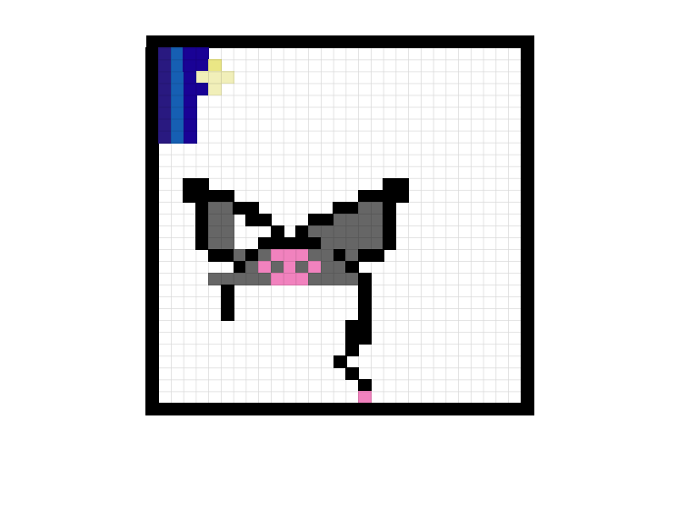

I created my favicon by makeing my design and creating it on sheets after that i made a pdf copy of it and took a screeshot of my image. After i upload my file to replit i started added codes to create the page to add the favicon. As i added more codes the page was forming up.i added my favicon to the page so people can see my can a big image of my favicon.
+"